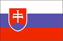
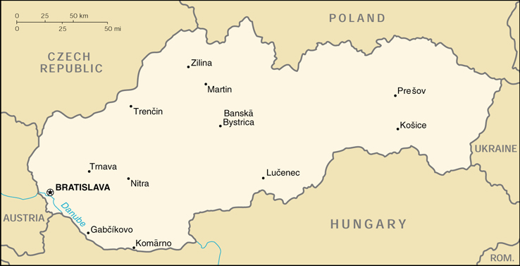

{kind=link}


| Slovakia |  |
|
|
 | |
| Introduction |
Background: In 1918 the Slovaks joined the closely related Czechs to form Czechoslovakia. Following the chaos of World War II, Czechoslovakia became a communist nation within Soviet-ruled Eastern Europe. Soviet influence collapsed in 1989 and Czechoslovakia once more became free. The Slovaks and the Czechs agreed to separate peacefully on 1 January 1993. Slovakia has experienced more difficulty than the Czech Republic in developing a modern market economy.
| Geography |
Location: Central Europe, south of Poland
Geographic coordinates: 48 40 N, 19 30 E
Map references: Europe
Area:
total:
48,845 sq km
land:
48,800 sq km
water:
45 sq km
Area - comparative: about twice the size of New Hampshire
Land boundaries:
total:
1,355 km
border countries:
Austria 91 km, Czech Republic 215 km, Hungary 515 km, Poland 444 km, Ukraine 90 km
Coastline: 0 km (landlocked)
Maritime claims: none (landlocked)
Climate: temperate; cool summers; cold, cloudy, humid winters
Terrain: rugged mountains in the central and northern part and lowlands in the south
Elevation extremes:
lowest point:
Bodrok River 94 m
highest point:
Gerlachovka 2,655 m
Natural resources: brown coal and lignite; small amounts of iron ore, copper and manganese ore; salt; arable land
Land use:
arable land:
31%
permanent crops:
3%
permanent pastures:
17%
forests and woodland:
41%
other:
8% (1993 est.)
Irrigated land: 800 sq km (1993 est.)
Natural hazards: NA
Environment - current issues: air pollution from metallurgical plants presents human health risks; acid rain damaging forests
Environment - international agreements:
party to:
Air Pollution, Air Pollution-Nitrogen Oxides, Air Pollution-Sulphur 85, Air Pollution-Sulphur 94, Air Pollution-Volatile Organic Compounds, Antarctic Treaty, Biodiversity, Climate Change, Endangered Species, Environmental Modification, Hazardous Wastes, Law of the Sea, Nuclear Test Ban, Ozone Layer Protection, Ship Pollution, Wetlands
signed, but not ratified:
Air Pollution-Persistent Organic Pollutants, Antarctic-Environmental Protocol, Climate Change-Kyoto Protocol
Geography - note: landlocked
| People |
Population: 5,407,956 (July 2000 est.)
Age structure:
0-14 years:
19% (male 538,780; female 514,427)
15-64 years:
69% (male 1,854,779; female 1,880,584)
65 years and over:
12% (male 236,072; female 383,314) (2000 est.)
Population growth rate: 0.12% (2000 est.)
Birth rate: 10 births/1,000 population (2000 est.)
Death rate: 9.29 deaths/1,000 population (2000 est.)
Net migration rate: 0.53 migrant(s)/1,000 population (2000 est.)
Sex ratio:
at birth:
1.05 male(s)/female
under 15 years:
1.05 male(s)/female
15-64 years:
0.99 male(s)/female
65 years and over:
0.62 male(s)/female
total population:
0.95 male(s)/female (2000 est.)
Infant mortality rate: 9.18 deaths/1,000 live births (2000 est.)
Life expectancy at birth:
total population:
73.74 years
male:
69.71 years
female:
77.98 years (2000 est.)
Total fertility rate: 1.25 children born/woman (2000 est.)
Nationality:
noun:
Slovak(s)
adjective:
Slovak
Ethnic groups: Slovak 85.7%, Hungarian 10.6%, Gypsy 1.6% (the 1992 census figures underreport the Gypsy/Romany community, which is about 500,000), Czech, Moravian, Silesian 1.1%, Ruthenian and Ukrainian 0.6%, German 0.1%, Polish 0.1%, other 0.2% (1996)
Religions: Roman Catholic 60.3%, atheist 9.7%, Protestant 8.4%, Orthodox 4.1%, other 17.5%
Languages: Slovak (official), Hungarian
Literacy:
definition:
NA
total population:
NA%
male:
NA%
female:
NA%
| Government |
Country name:
conventional long form:
Slovak Republic
conventional short form:
Slovakia
local long form:
Slovenska Republika
local short form:
Slovensko
Data code: LO
Government type: parliamentary democracy
Capital: Bratislava
Administrative divisions: 8 regions (kraje, singular - kraj); Banskobystricky, Bratislavsky, Kosicky, Nitriansky, Presovsky, Trenciansky, Trnavsky, Zilinsky
Independence: 1 January 1993 (Czechoslovakia split into the Czech and Slovak Republics)
National holiday: Slovak Constitution Day, 1 September (1992); Anniversary of Slovak National Uprising, 29 August (1944)
Constitution: ratified 1 September 1992, fully effective 1 January 1993; changed in September 1998 to allow direct election of the president
Legal system: civil law system based on Austro-Hungarian codes; has not accepted compulsory ICJ jurisdiction; legal code modified to comply with the obligations of Organization on Security and Cooperation in Europe (OSCE) and to expunge Marxist-Leninist legal theory
Suffrage: 18 years of age; universal
Executive branch:
chief of state:
President Rudolf SCHUSTER (since 15 June 1999)
head of government:
Prime Minister Mikulas DZURINDA (since 30 October 1998)
cabinet:
Cabinet appointed by the president on the recommendation of the prime minister
elections:
president elected by direct popular vote for a five-year term; election last held 30 May 1999 (next to be held NA 2004); note - following the National Council elections in September 1998, the Constitution was changed to allow direct election of the president; following National Council elections, the leader of the majority party or the leader of a majority coalition is usually appointed prime minister by the president
election results:
Rudolf SCHUSTER won the first direct popular election with 57% of the vote
note:
government coalition - SDK, SDL, SMK, SOP
Legislative branch:
unicameral National Council of the Slovak Republic or Narodna Rada Slovenskej Republiky (150 seats; members are elected on the basis of proportional representation to serve four-year terms)
elections:
last held 25-26 September 1998 (next to be held NA September 2002)
election results:
percent of vote by party - HZDS 27%, SDK 26.3%, SDL 14.7%, SMK 9.1%, SNS 9.1%, SOP 8%; seats by party - governing coalition 93 (SDK 42, SDL 23, SMK 15, SOP 13), opposition 57 (HZDS 43, SNS 14)
Judicial branch: Supreme Court, judges are elected by the National Council; Constitutional Court, judges appointed by president from group of nominees approved by the parliament
Political parties and leaders: Christian Democratic Movement or KDH [Jan CARNOGURSKY]; Coexistence [Miklos DURAY]; Democratic Party or DS [Jan LANGOS]; Democratic Union or DU [Lubomir HARACH]; Hungarian Christian Democratic Movement or MKDH [Bela BUGAR]; Hungarian Civic Party or MOS [Laszlo A. NAGY]; Movement for a Democratic Slovakia or HZDS [Vladimir MECIAR]; Party of Civic Understanding or SOP [Pavol HAMZIK]; Party of Greens in Slovakia or SZS [Ladislav AMBROS]; Party of the Democratic Center or SDS [Ivan MJARTAN]; Party of the Democratic Left or SDL [Jozef MIGAS]; Party of the Hungarian Coalition or SMK (includes MKDH, MOS, and Coexistence) [Bela BUGAR]; Slovak Democratic Coalition or SDK (includes KDH, DS, DU, SSDS, SZS) [Mikulas DZURINDA]; Slovak National Party or SNS [Anna MALIKOVA]; Social Democratic Party of Slovakia or SSDS [Jaroslav VOLF]; SMER [Robert FICO]
Political pressure groups and leaders: Association of Employers of Slovakia; Association of Towns and Villages or ZMOS; Christian Social Union; Confederation of Trade Unions or KOZ; Metal Workers Unions or KOVO and METALURG; Party of Entrepreneurs and Businessmen of Slovakia
International organization participation: Australia Group, BIS, BSEC (observer), CCC, CE, CEI, CERN, EAPC, EBRD, ECE, EU (applicant), FAO, IAEA, IBRD, ICAO, ICFTU, ICRM, IDA, IFC, IFRCS, ILO, IMF, IMO, Inmarsat, Intelsat (nonsignatory user), Interpol, IOC, IOM, ISO, ITU, NAM (guest), NSG, OPCW, OSCE, PCA, PFP, UN, UNCTAD, UNDOF, UNESCO, UNIDO, UNTSO, UPU, WEU (associate partner), WFTU, WHO, WIPO, WMO, WToO, WTrO, ZC
Diplomatic representation in the US:
chief of mission:
Ambassador Martin BUTORA
chancery:
(temporary) Suite 250, 2201 Wisconsin Avenue NW, Washington, DC 20007
telephone:
[1] (202) 965-5161
FAX:
[1] (202) 965-5166
Diplomatic representation from the US:
chief of mission:
Ambassador (vacant); Charge d'Affaires Douglas HENGEL
embassy:
Hviezdoslavovo Namestie 4, 81102 Bratislava
mailing address:
use embassy street address
telephone:
[421] (7) 5443-0861, 5443-3338
FAX:
[421] (7) 5441-5148
Flag description: three equal horizontal bands of white (top), blue, and red superimposed with the Slovak cross in a shield centered on the hoist side; the cross is white centered on a background of red and blue
| Economy |
Economy - overview: Slovakia continues the difficult transition from a centrally planned economy to a modern market economy. It started 1999 faced with a sharp slowdown in GDP growth, large budget and current account deficits, fast-growing external debt, and persisting corruption, but made considerable progress toward achieving macroeconomic stabilization later in the year. Tough austerity measures implemented in May cut the overall fiscal deficit from 6% in 1998 to under 4% of GDP, and the current account deficit was halved to an estimated 5% of GDP. Slovakia was invited by the EU in December to begin accession negotiations early in 2000. Foreign investor interest, although rising, has not yet led to actual deals; several credit rating agencies have upgraded their outlook for the country. However, Slovakia's fiscal position remains weak; inflation and unemployment remain high; and the government is only now addressing the structural problems inherited from the MECIAR period, such as large inefficient enterprises, an insolvent banking sector and high inter-company debts, and declining tax and social support payments. Furthermore, the government faces considerable public discontent over the government's austerity package, persistent high unemployment - which reached an all-time high of 20% in December 1999 - rising consumer prices, reduced social benefits, and declining living standards. Real GDP is forecast to stagnate in 2000; inflationary pressures will remain strong due to further price liberalization; and little scope exists for further fiscal consolidation in the 2000 budget, which is based on rosier assumptions than nearly all private forecasts.
GDP: purchasing power parity - $45.9 billion (1999 est.)
GDP - real growth rate: 1.9% (1999 est.)
GDP - per capita: purchasing power parity - $8,500 (1999 est.)
GDP - composition by sector:
agriculture:
5%
industry:
33%
services:
62% (1998)
Population below poverty line: NA%
Household income or consumption by percentage share:
lowest 10%:
5.1%
highest 10%:
18.2% (1992)
Inflation rate (consumer prices): 14% (1999 est.)
Labor force: 3.32 million (1997)
Labor force - by occupation: industry 29.3%, agriculture 8.9%, construction 8%, transport and communication 8.2%, services 45.6% (1994)
Unemployment rate: 20% (1999 est.)
Budget:
revenues:
$5.4 billion
expenditures:
$5.8 billion, including capital expenditures of $NA (1999 est.)
Industries: metal and metal products; food and beverages; electricity, gas, coke, oil, nuclear fuel; chemicals and manmade fibers; machinery; paper and printing; earthenware and ceramics; transport vehicles; textiles; electrical and optical apparatus; rubber products
Industrial production growth rate: 0.9% (1998)
Electricity - production: 20.035 billion kWh (1998)
Electricity - production by source:
fossil fuel:
24%
hydro:
20%
nuclear:
56%
other:
0% (1999 est.)
Electricity - consumption: 23.3 billion kWh (1999 est.)
Electricity - exports: 920 million kWh (1999 est.)
Electricity - imports: 840 million kWh (1999 est.)
Agriculture - products: grains, potatoes, sugar beets, hops, fruit; pigs, cattle, poultry; forest products
Exports: $10.1 billion (f.o.b., 1999 est.)
Exports - commodities: machinery and transport equipment 37%; intermediate manufactured goods 30%, miscellaneous manufactured goods 13%; chemicals 9%; raw materials 4% (1998)
Exports - partners: EU 56% (Germany 29%, Austria 7%), Czech Republic 20%, Poland 7% (1998)
Imports: $11.2 billion (f.o.b., 1999 est.)
Imports - commodities: machinery and transport equipment 40%; intermediate manufactured goods 18%; fuels 11%; chemicals 11%; miscellaneous manufactured goods 10% (1998)
Imports - partners: EU 50% (Germany 26%, Italy 6%), Czech Republic 18%, Russia 10% (1998)
Debt - external: $10.6 billion (1999)
Economic aid - recipient: $421.9 million (1995)
Currency: 1 koruna (Sk) = 100 halierov
Exchange rates: koruny (Sk) per US$1 - 42.059 (January 2000), 41.363 (1999), 35.233 (1998), 33.616 (1997), 30.654 (1996), 29.713 (1995)
Fiscal year: calendar year
| Communications |
Telephones - main lines in use: 1.557 million (1998)
Telephones - mobile cellular: 641,000 (1998)
Telephone system:
domestic:
predominantly an analog system which is now receiving digital equipment and is being enlarged with fiber-optic cable, especially in the larger cities; mobile cellular capability has been added
international:
3 international exchanges, 1 in Bratislava and 2 in Banska Bystrica, are available; Slovakia is participating in several international telecommunications projects which will increase the availability of external services
Radio broadcast stations: AM 15, FM 78, shortwave 2 (1998)
Radios: 3.12 million (1997)
Television broadcast stations: 41 (1998)
Televisions: 2.62 million (1997)
Internet Service Providers (ISPs): 11 (1999)
| Transportation |
Railways:
total:
3,660 km
broad gauge:
102 km 1.520-m gauge
standard gauge:
3,507 km 1.435-m gauge (1505 km electrified; 1,011 km double track)
narrow gauge:
51 km (46 km 1,000-m gauge; 5 km 0.750-m gauge) (1998)
Highways:
total:
17,710 km
paved:
17,533 km (including 288 km of expressways)
unpaved:
177 km (1998 est.)
Waterways: 172 km on the Danube
Pipelines: petroleum products NA km; natural gas 2,700 km
Ports and harbors: Bratislava, Komarno
Merchant marine:
total:
3 ships (1,000 GRT or over) totaling 15,041 GRT/19,517 DWT
ships by type:
cargo 3 (1999 est.)
Airports: 36 (1999 est.)
Airports - with paved runways:
total:
18
over 3,047 m:
1
2,438 to 3,047 m:
3
1,524 to 2,437 m:
3
914 to 1,523 m:
3
under 914 m:
8 (1999 est.)
Airports - with unpaved runways:
total:
18
2,438 to 3,047 m:
1
914 to 1,523 m:
9
under 914 m:
8 (1999 est.)
| Military |
Military branches: Ground Forces, Air and Air Defense Forces, Territorial Defense Forces, Civil Defense Force
Military manpower - military age: 18 years of age
Military manpower - availability:
males age 15-49:
1,484,567 (2000 est.)
Military manpower - fit for military service:
males age 15-49:
1,134,751 (2000 est.)
Military manpower - reaching military age annually:
males:
45,605 (2000 est.)
Military expenditures - dollar figure: $332 million (FY99)
Military expenditures - percent of GDP: 1.7% (FY99)
| Transnational Issues |
Disputes - international: ongoing Gabcikovo Dam dispute with Hungary; agreement with Czech Republic signed 24 November 1998 resolves issues of redistribution of former Czechoslovak federal property - approval by both parliaments is expected in 2000
Illicit drugs: transshipment point for Southwest Asian heroin bound for Western Europe